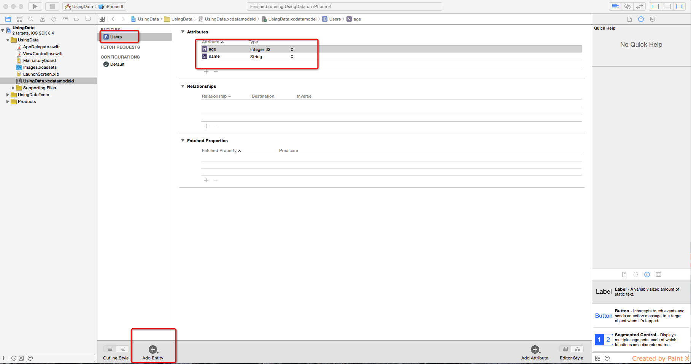

记录了 iOS 中数据操作相关的知识点，包括 SandBox 的概念，XML 数据处理，JSON 数据处理，SQLite 增删改查，plist 文件。
iOS 数据操作
SandBox
沙盒概念使用于 iOS 和 OS X，当应用程序采用了 SandBox，你的应用程序可以访问以下目录：
- 应用程序容器目录。 应用程序第一次运行时，操作系统会为你的应用程序创建特定的目录，并且只属于你的应用程序，它称为容器。你的应用程序可以不受约束的读写容器目录。
- 应用程序分组的容器目录。 沙盒应用程序可以指定让它访问一个或多个应用程序分组的容器目录，在分配的权限的应用程序之间彼此可以互相访问。
- 用户指定的文件。 拥有沙盒的应用程序可以访问明确由用户打开的文件或拖动到应用程序中的文件，无论文件处于什么位置。
- 相关联的文件。 跟应用程序同名但是拓展名称不相同的文件。使用情景见下方。
- 临时目录，命令行工具目录，指定的全局可读目录。
相关联的文件的使用情景：In both scenarios, you must make a small change to the application’s Info.plist file. Your app should already declare a Document Types (CFBundleDocumentTypes) array that declares the file types your app can open.
For each file type dictionary in that array, if that file type should be treated as a potentially related type for open and save purposes, add the key NSIsRelatedItemType with a boolean value of YES.（http://stackoverflow.com/）
写出文件
1 | var sp = NSSearchPathForDirectoriesInDomains(NSSearchPathDirectory.DocumentDirectory, NSSearchPathDomainMask.AllDomainsMask, true) if sp.count > 0{ var url = NSURL(fileURLWithPath: "\(sp[0])/data.txt") // println(url) var data = NSMutableData() data.appendData("Hello Swift\n".dataUsingEncoding(NSUTF8StringEncoding, allowLossyConversion: true)!) data.writeToFile(url!.path!, atomically: true) } |
读取文件
1 | // 两种加载文件方式 var Loaddata = NSData(contentsOfFile: url!.path!) var str = NSString(data: data, encoding: NSUTF8StringEncoding) var str1 = NSString(contentsOfURL: url!, encoding: NSUTF8StringEncoding, error: nil) println("load data : \(str) and \(str1)") |
应用程序首选项数据
应用程序首选项数据可以方便的保存一些较小的数据，它不能存储很大的数据。
它以 key/value 方式存储数据，所以特别简单快捷。
存储首选项数据
1 | @IBOutlet weak var inputText: UITextView! @IBAction func saveBtn(sender: AnyObject) { var ud = NSUserDefaults.standardUserDefaults() ud.setObject(inputText.text, forKey: "data") println("Saved") } |
读取首选项数据
1 | @IBOutlet weak var inputText: UITextView! //定义变量 var ud:NSUserDefaults! @IBAction func saveBtn(sender: AnyObject) { //设置 ud.setObject(inputText.text, forKey: "data") println("Saved") } override func viewDidLoad() { super.viewDidLoad() //初始化变量 ud = NSUserDefaults.standardUserDefaults() //读取并判断 if let value:AnyObject = ud.objectForKey("data"){ inputText.text = value as! String }else{ inputText.text = "No value" } } |
操作 XML 数据
XMl 格式
1 | <data> <person age="15">ZhangSan</person> <person age="2">jike</person> <a> <b> <c> data </c> </b> </a> </data> |
swift 解析 XML
类采用协议
class ViewController: UIViewController,NSXMLParserDelegate
在 viewDidLoad 读取数据，分配委托对象，并解析
1 | var parser = NSXMLParser(contentsOfURL: NSURL(fileURLWithPath: NSBundle.mainBundle().pathForResource("data", ofType: "xml")!)) //分配委托对象，每个委托方法负责处理相应的功能，解析 XML 文件的顺序是按照从前往后 parser!.delegate = self //开始解析 parser!.parse() |
实现委托方法
1 | var currentNodeName:String! //每个元素的处理 func parser(parser: NSXMLParser, didStartElement elementName: String, namespaceURI: String?, qualifiedName qName: String?, attributes attributeDict: [NSObject : AnyObject]) { //println(elementName) currentNodeName = elementName if elementName == "person"{ // 如果没有 age 属性，进行强制解包会出现异常，所以需要判断一下 // var age: AnyObject? = attributeDict["age"] // println("age : \(age!)") // 使用这个方式不会出现上面的问题 if let age: AnyObject = attributeDict["age"]{ println("age: \(age)") } } } //每个节点内容 func parser(parser: NSXMLParser, foundCharacters string: String?) { //println(string!) var str = string?.stringByTrimmingCharactersInSet(NSCharacterSet.whitespaceAndNewlineCharacterSet()) if str != ""{ println("current Node \(str!)") } } |
JSON 数据
格式
1 | [1,3,7,"jike",{"name":"ZhangSan","age":20}] |
1 | {"language":"Java","type":"static","arr":[2,3,4,5]} |
解析 JSON
1 | var json:AnyObject? = NSJSONSerialization.JSONObjectWithData(NSData(contentsOfURL: NSURL(fileURLWithPath: NSBundle.mainBundle().pathForResource("obj", ofType: "json")!)!)!, options: NSJSONReadingOptions.allZeros, error: nil) //访问一个可选元素时，这种写法会自动拆包，如果不存在这个元素，则不会执行 if let lang:AnyObject = json?.objectForKey("language"){ println(lang) } |
Swift 生成 JSON
1 | var dict = ["name":"jikexueyuan","age":1] var jsonData = NSJSONSerialization.dataWithJSONObject(dict, options: NSJSONWritingOptions.allZeros, error: nil) var str = NSString(data: jsonData!, encoding: NSUTF8StringEncoding) println(str!) |
Plist数据
介绍
是苹果平台的配置文件，基于 XML 格式，能方便的配合苹果产品使用。iOS 的 API 和 OS X 的 API可以方便的将 plist 数据读取成数组或者字典。
Root 节点的类型可以为 Array 或者 Dictionary，决定了读取成字典还是数组。
创建和编写 plist 文件
在 Xcode 中直接创建 Property list 文件，并手动编辑
解析 plist 文件
解析成数组
1 | var arr = NSArray(contentsOfURL: NSURL(fileURLWithPath: NSBundle.mainBundle().pathForResource("arr", ofType: "plist")!)!) println(arr![0]) |
解析成字典
1 | var dict = NSDictionary(contentsOfURL: NSURL(fileURLWithPath: NSBundle.mainBundle().pathForResource("dict", ofType: "plist")!)!) println(dict) var name:String = dict!["name"] as! String println("name: \(name)") |
CoreData
介绍 SQLite 以及如何创建一个使用 CoreData 的项目。
iOS 在 CoreData 框架中封装了关于数据库存储的操作，所以可以节省许多编写 SQL 语句的时间。
SQLite
SQLite 是一个小型的关系型数据库
SQLite 介绍：http://ivanzz.blog.51cto.com/6378766/1130544
SQLite 是开源的，并且很轻量，所以很多客户端程序都内置了 SQLite 驱动，iOS 也内置了 SQLite 驱动。
SQLite 可以方便的在本地存储一段数据。
创建数据结构
1.在创建项目时勾选 Using CoreDate
2.选中 UsingData.xcdatamodeld 进行编辑，如图 1-1
图 1-1： 编辑 UsingData.xcdatamodeld，注意新建的 Entity 的首字母需要大写

插入数据
1 | var context = (UIApplication.sharedApplication().delegate as! AppDelegate).managedObjectContext var row:AnyObject = NSEntityDescription.insertNewObjectForEntityForName("Users", inManagedObjectContext: context!) row.setValue("jiekexueyuan", forKey: "name") row.setValue(1, forKey: "age") context?.save(nil) println("Run Here") |
可以在 AppDelegate 中的委托 azy var persistentStoreCoordinator: NSPersistentStoreCoordinator 中 println(url) 输出数据库存放的位置，然后使用 SQLite 工具直接浏览操作数据库。
1 | lazy var persistentStoreCoordinator: NSPersistentStoreCoordinator? = { // The persistent store coordinator for the application. This implementation creates and return a coordinator, having added the store for the application to it. This property is optional since there are legitimate error conditions that could cause the creation of the store to fail. // Create the coordinator and store var coordinator: NSPersistentStoreCoordinator? = NSPersistentStoreCoordinator(managedObjectModel: self.managedObjectModel) let url = self.applicationDocumentsDirectory.URLByAppendingPathComponent("UsingData.sqlite") println(url) //打印数据库地址 var error: NSError? = nil var failureReason = "There was an error creating or loading the application's saved data." if coordinator!.addPersistentStoreWithType(NSSQLiteStoreType, configuration: nil, URL: url, options: nil, error: &error) == nil { coordinator = nil // Report any error we got. var dict = [String: AnyObject]() dict[NSLocalizedDescriptionKey] = "Failed to initialize the application's saved data" dict[NSLocalizedFailureReasonErrorKey] = failureReason dict[NSUnderlyingErrorKey] = error error = NSError(domain: "YOUR_ERROR_DOMAIN", code: 9999, userInfo: dict) // Replace this with code to handle the error appropriately. // abort() causes the application to generate a crash log and terminate. You should not use this function in a shipping application, although it may be useful during development. NSLog("Unresolved error \(error), \(error!.userInfo)") abort() } return coordinator }() |
读取数据
定义变量
1 | var dataArr:Array<AnyObject> = [] var context:NSManagedObjectContext! |
读取数据
1 | context = (UIApplication.sharedApplication().delegate as! AppDelegate).managedObjectContext var f = NSFetchRequest(entityName:"Users"); dataArr = context.executeFetchRequest(f, error: nil)! |
渲染界面
1 | let cell = tableView.dequeueReusableCellWithIdentifier("cell", forIndexPath: indexPath) as! UITableViewCell // Configure the cell... var label = cell.viewWithTag(2) as! UILabel var name = dataArr[indexPath.row].valueForKey("name") as! String var age = dataArr[indexPath.row].valueForKey("age") label.text = "name: \(name),age:\(age!)" return cell |
修改数据
从数据库获取指定数据
1 | //UsersTableViewController: var data = dataArr[indexPath.row] as! NSManagedObject //vc.data 在 UserContentViewController.m 中定义：var data:NSManagedObject! var vc = storyboard?.instantiateViewControllerWithIdentifier("UserContent") as! UserContentViewController vc.data = data |
将修改后的值保存到数据库中
1 | //UserContentViewController.m: data.setValue(tfName.text, forKey: "name") data.setValue(tfAge.text.toInt(), forKey: "age") data.managedObjectContext?.save(nil) |
删除数据
1 | //注意与 deletedObjects 的区别 context.deleteObject(dataArr[indexPath.row] as! NSManagedObject) context.save(nil) |